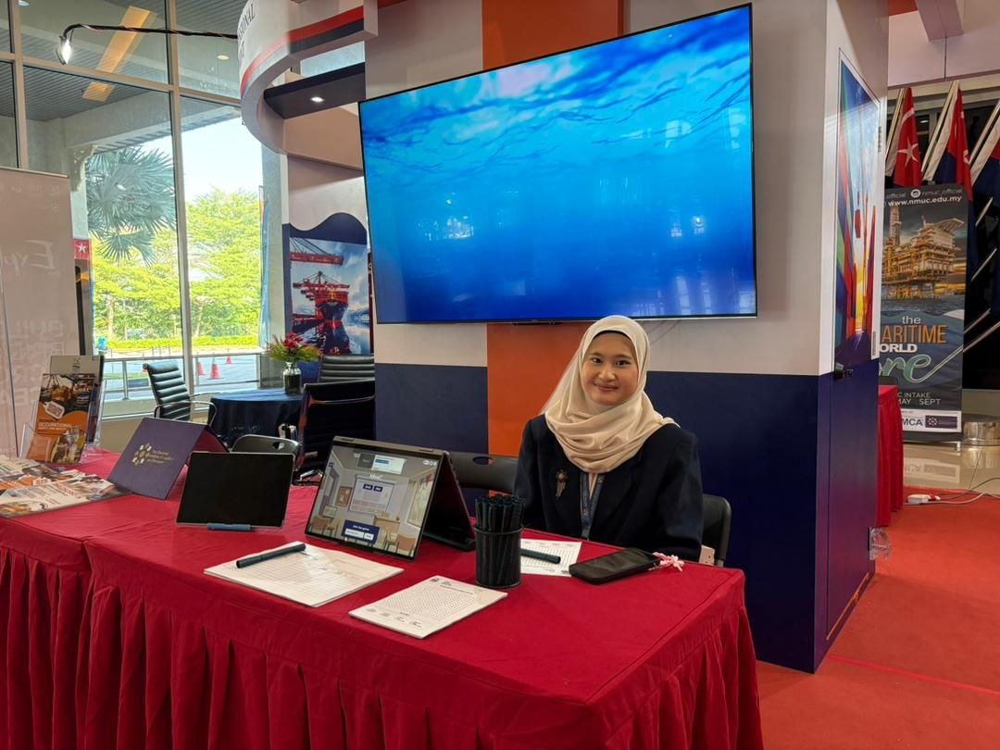
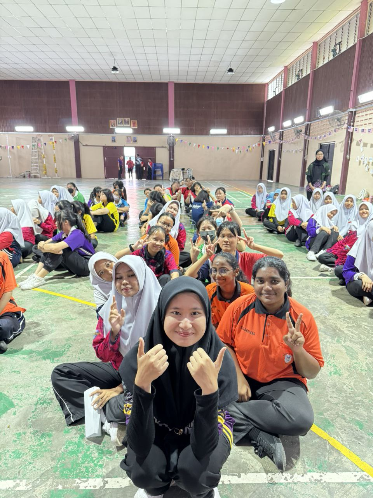
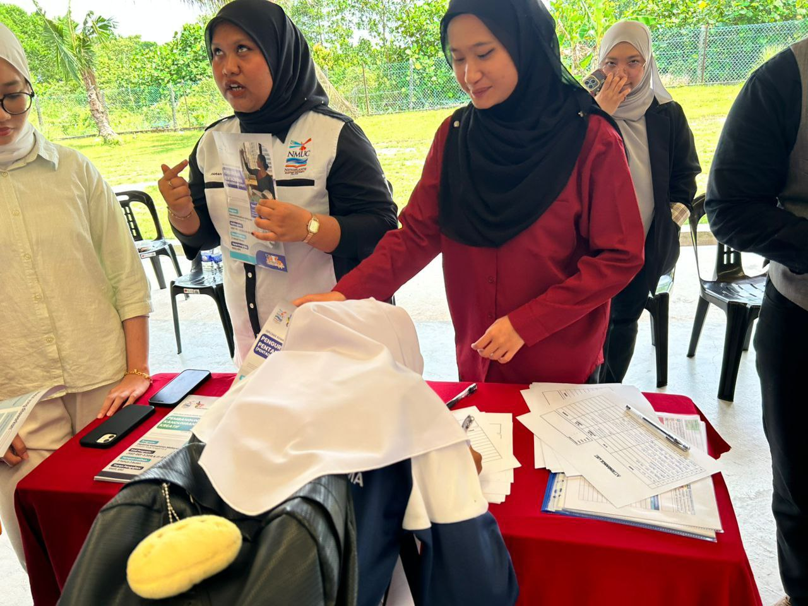
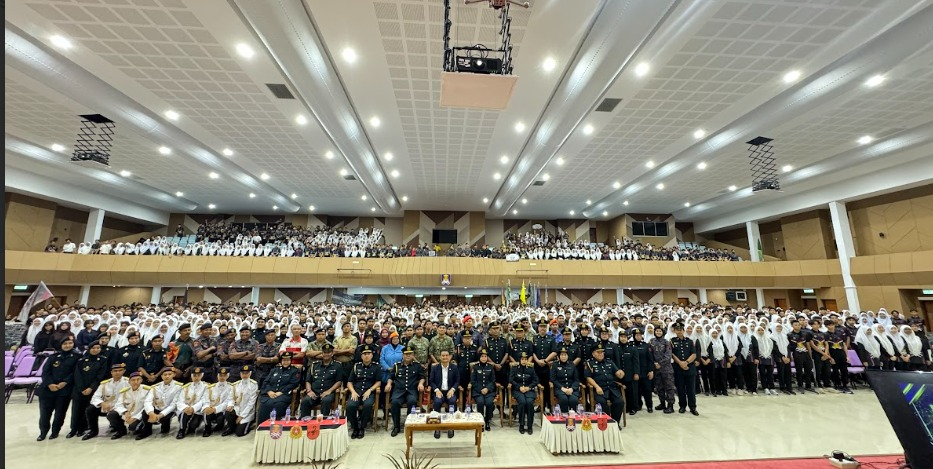
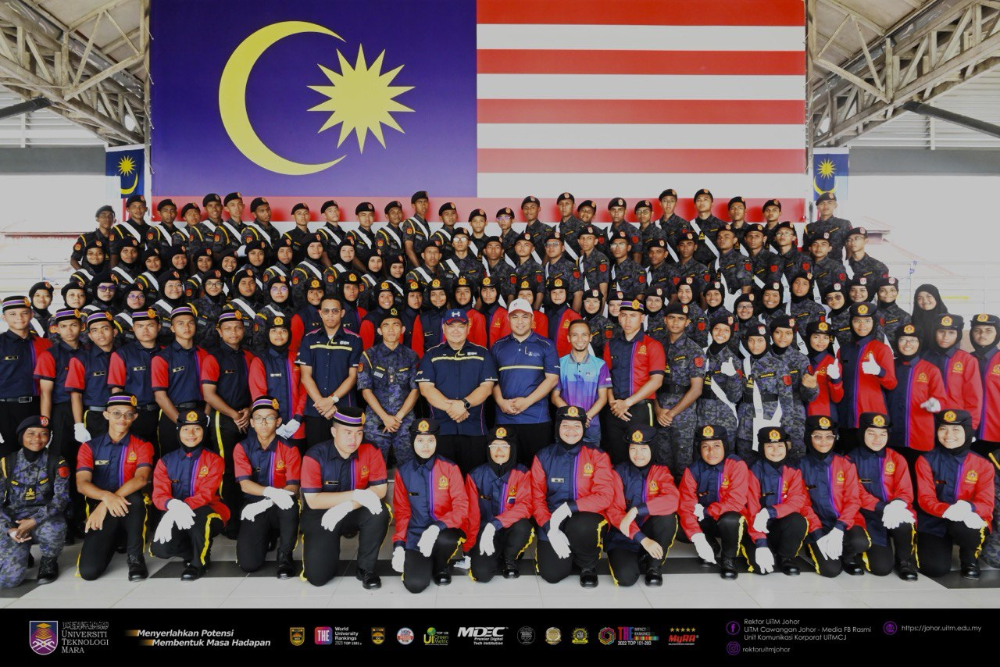
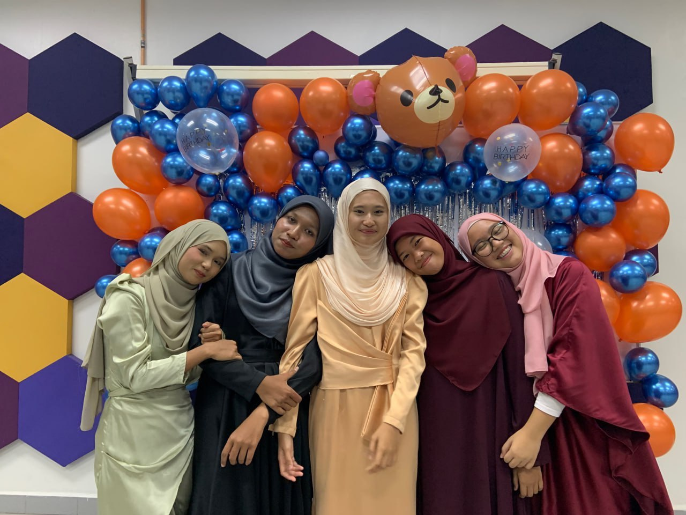
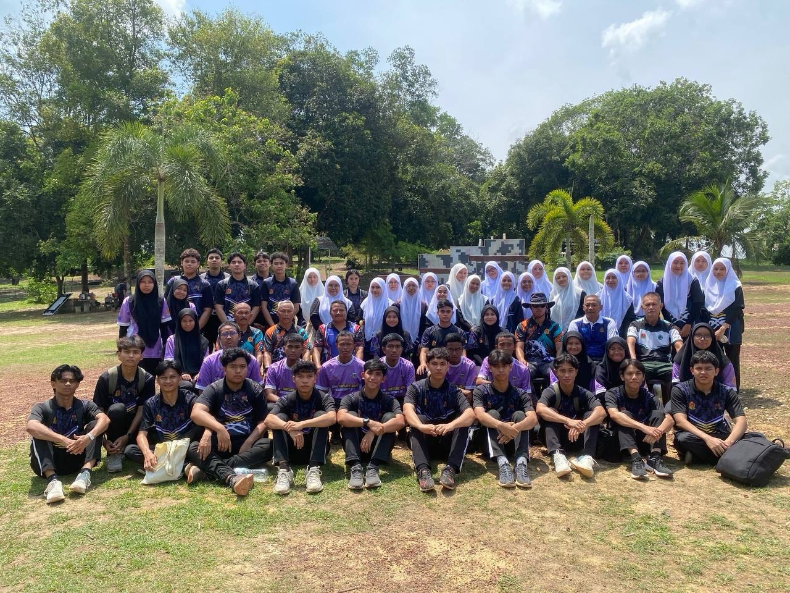
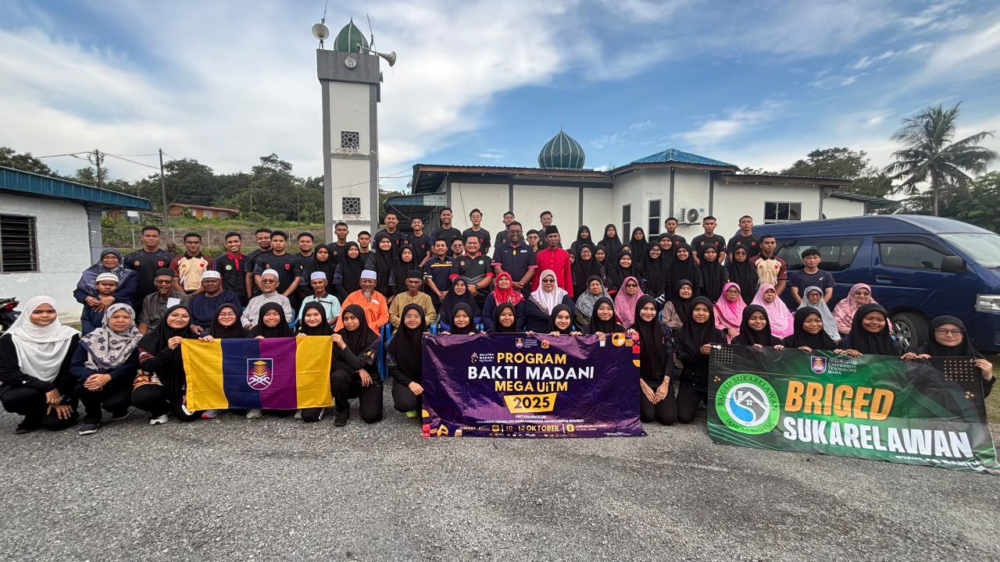

TENGKU NUR SYAFIYAH ANIS
MY EXPERIENCE
Internship Training
Company: NMIT Resources Sdn Bhd
Role: Education Advisor
Duration: 2 Months
Events:
- Exhibitor | International Conference on Maritime Logistics and Ports (ICMLP) 2025 @ Persada Johor, Johor Bahru
- Facilitator | Connect & Conquer with NMUC @ SMK Sultan Ibrahim, Kulai
- Marketer | TVET Talk with NMUC @ SMK Bandar Uda Utama, Johor Bahru



Majlis Perwakilan Komander KESATRIA (MPKK)
Positions Held:
- Setiausaha Agung 1 - Komander Muda (KM)
- Setiausaha Agung 2 - Komander Rendah Kanan (KRK)
- Setiausaha Biro Akademik - Komander Rendah Muda (KRM)
Duration: 2 Years
Events:
- Urus Setia | Pertandingan Kompeni Kokurikulum Beruniform (PERKOM KO) 2025
- Urus Setia | Mesyuarat Agung Dwi-Tahunan Majlis Perwakilan Komander Kesatria Batalion VI Sesi Okt 2025 - Feb 2026
- Urus Setia | Pertandingan Kompeni Kokurikulum Beruniform Mini (Mini PERKOM KO) 2025
- Urus Setia | Kem dan Latihan Pemantapan Komander Kesatria Batalion VI Siri Ke-39
- Urus Setia | Mesyuarat Agung Dwi-Tahunan Majlis Perwakilan Komander Kesatria Batalion VI Sesi Mac - Ogos 2025
- Urus Setia | Latihan Intensif Bakal Komander (LIBK) Siri Ke-39/2025
- Urus Setia | Majlis Kecemerlangan Kokurikulum 2024
- Urus Setia | Sambutan Hari Ulang Tahun Kesatria Ke-48
- Urus Setia | Pertandingan Kompeni Kokurikulum Beruniform (PERKOM KO) 2024
- Urus Setia | Mesyuarat Agung Dwi-Tahunan Majlis Perwakilan Komander Kesatria Batalion VI Sesi Okt 2024 - Feb 2025
- Peserta | Majlis Perbarisan dan Perarakan Hari Kebangsaan 2024 Peringkat Negeri Johor
- Urus Setia | UiTM Marching Band Competition (UMBC) 2024
- Urus Setia | Pertandingan Kompeni Kokurikulum Beruniform Mini (Mini PERKOM KO) 2024
- Peserta | Kem dan Latihan Pemantapan Komander Kesatria Batalion VI Siri Ke-38
- Urus Setia | Mesyuarat Agung Dwi-Tahunan Majlis Perwakilan Komander Kesatria Batalion VI Sesi Mac - Ogos 2024
- Peserta | Latihan Intensif Bakal Komander (LIBK) Siri Ke-38/2024


Kompeni Echo Kesatria Negara
Positions Held:
- Bendahari
Duration: 2 Years
Events:
- Jemputan | Mesyuarat Agung Dwi-Tahunan Kompeni Echo Kesatria Negara Sesi Okt 2024 - Feb 2025
- Jemputan | Malam Samudera Nirmala Kompeni Echo Kesatria Negara Sesi Mac - Ogos 2025
- Jemputan | Mesyuarat Agung Dwi-Tahunan Kompeni Echo Kesatria Negara Sesi Mac - Ogos 2025
- Urus Setia | Majlis Penutup Kompeni Echo Kesatria Negara Sesi Okt 2024 - Feb 2025
- Komander Pengiring | Kursus Ikhtiar Hidup Kompeni Echo Kesatria Negara Sesi Okt 2024 - Feb 2025
- Komander Pengiring | Pertandingan Kompeni Kokurikulum Beruniform (PERKOM KO) 2025
- Urus Setia | Mesyuarat Agung Dwi-Tahunan Kompeni Echo Kesatria Negara Sesi Okt 2024 - Feb 2025
- Urus Setia | Program Pembudayaan Esi-iDART Pelajar Kompeni Echo Kesatria Negara Sesi Mac - Ogos 2024
- Komander Pengiring | Ikhtiar Hidup Kompeni Echo Kesatria Negara Sesi Mac - Ogos 2024
- Komander Pengiring | Pertandingan Kompeni Kokurikulum Beruniform Mini (Mini PERKOM KO) 2024
- Urus Setia | Mesyuarat Agung Dwi-Tahunan Kompeni Echo Kesatria Negara Sesi Mac - Ogos 2024


Briged Sukarelawan UiTM Johor
Role: Volunteer
Duration: 2 Years
Events:
- Progam Bakti Madani 2025
- Annual General Meeting Briged Sukarelawan UiTM Johor Sesi Okt 2024 - Feb 2025
- Annual General Meeting Briged Sukarelawan UiTM Johor Sesi Mac - Ogos 2024

×